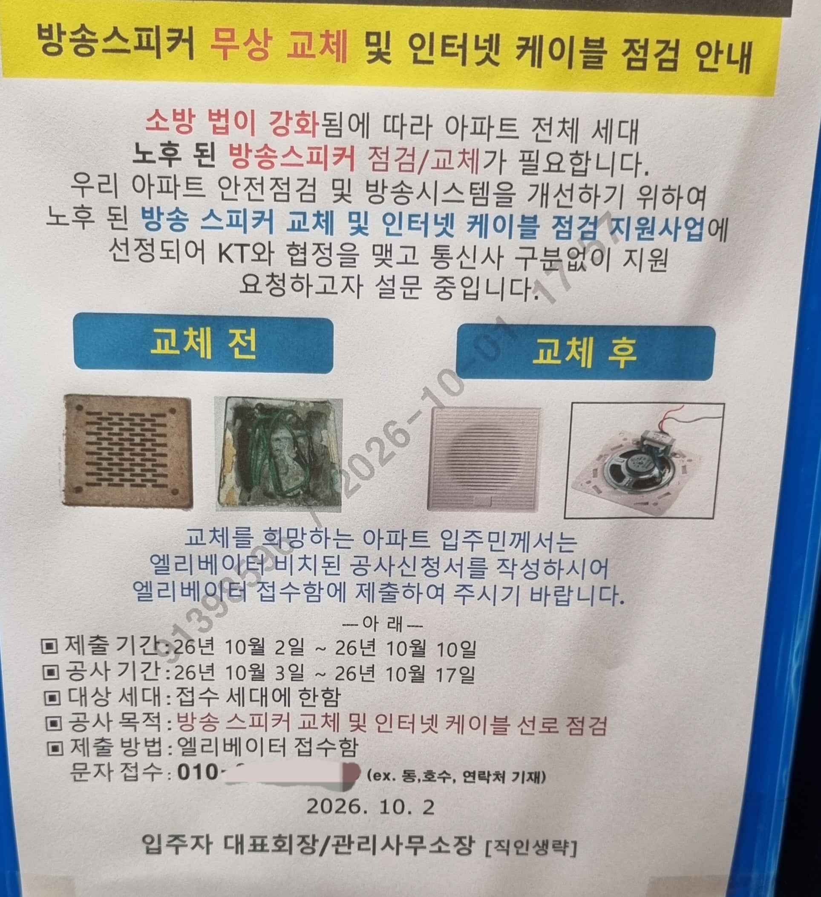

이거 뭐지
스피커 교체를 왜 kt가 무료로 하고 인터넷 케이블을 점검한다는 거임
뭔가 상술이나 비리같은게 있나?

이거 뭐지
스피커 교체를 왜 kt가 무료로 하고 인터넷 케이블을 점검한다는 거임
뭔가 상술이나 비리같은게 있나?
저거 오래된 아파트면 인터넷 케이블 교체 하는게 나을수도 있음.. 그래야 기가랜 들어갈수 있거든.. 솔직히 kt입장에서 vdsl 유지보수 하기 힘들껄? 장비 나오는게 없어서
cat6 케이블로 바꿔준다고 우편함에 끼워놨더라 ㅋ
이거 우리아파트도 붙었던데 우리는 스피커말고 그냥 UTP > 광 교체건이었음
근데 당근에 후기보니까 걍 영업임 KT아니면 광케이블로 안바꿔줌
KT여도 요금제 딴거쓰라 뭐하라 영업 ㅈㄴ게 했다고함
구축 아파트 건물 인입 utp 선이 노화됐거나 건물 외부(베란다, 창틀)에서 선이 지저분하게 들어오는 경우에 통신 환경 개선한다고 공사하는 경우 봤어서 아주 이상한 건 아니라고 생각함. 또, 소방 스피커랑 인터넷 선이 기능적으로는 연관성 없는 거 맞는데, 한편으로는 utp선을 세대 안으로 넣을 때 전선/전화선 관로로 넣으니까, 스피커 공사하는 업체가 전기연결까지 관리할 수 있는 업체라면 인터넷 선 교체까지 겸사겸사 진행할 수 있는 부분으로 보이기도 함. 비용 부담 주체가 어디인지까지는 모르겠고.
그런데 구형 배선(cat5)이라고 해서 꼭 기가인터넷이 안되는 건 아님. 집에서 유선전화 라인 쓰지 않는다면 그것까지 인터넷 선으로 페어링 해서 기가급(1Gbps) 연결해주기도 하던데. 1Gbps급 인터넷에 꼭 신형 배선(cat5e, cat6)이 필요한 건 아님. 5Gbps, 10Gbps 이런 거 쓰면 모르겠다만.
인터넷 설치까지가 필수인지는 몰?루. 니가 부담하는 금액이 따로 있는지 물어봐봐. 경비실이든 업체든 물어보면 될 일 같음.
인터넷 서비스 교체 안해도 무료로 공사해주는 거면, 그리고 공사 시간이 니 일정에 맞으면 선 교체해서 나쁠 건 없을 것 같음. 근데 니 집 아니고 현재 인터넷 쓰는데 문제 없으면 뭐 굳이 할 필요도 없지. 니 상황 맞게 대응해. 비용이 드는지, 인터넷 서비스 신청해야 하는지 질문해봐.
지원사업 주체가 어디냐를 봐야지 kt인지 정부지원을 kt가 협업하는건지
집에티비없고 인터넷만있는데 신청했거든
기시둘이 들어오자마자 하는 소리가
티비가 없네요? 이지랄하더니
이거 정검안되요 하면서 그냥나가더라
나라에서 지원금을 주 거나 다른 뭔가 있겠지 기업은 이익 추구집단이지 무료 봉사단체가 아니야
영업이지 오래된 아파트면 광케이블 새로 안깔면 그 아파트에서 가장 비싼 요금제 써봐야 250mb짜린가 그럴텐데 돈이 안되잖아 ㅋㅋ
관련법령 몇조 몇항 이런거 안쓰나